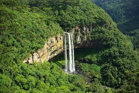

Importância das florestas.
Nas florestas e em outros cobertos vegetais que se realiza a fotossíntese da qual depende a vida: produção de oxigénio a partir do dióxido de carbono.As florestas têm varias funções como as florestas que são fonte de bens como madeiras, combustíveis, alimentos e matérias-primas (ex. resina, celulose, cortiça, frutos, bagas);

Um exemplo de um projeto de reflorestação.
O Projeto é chamado Projeto ProNauta.
Projeto de reflorestação.

Importância da reflorestação.
Melhora a qualidade do ar e equilibra os níveis de CO2 no ambiente (dióxido de carbono); ajuda a diminuir a temperatura do ambiente.
Exemplo de pessoas a praticar a reflorestação.